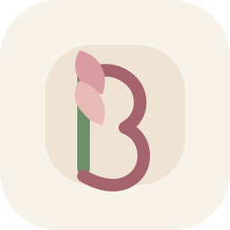

1. 花びら + 封筒
Bloom Letter の名前と意味が最も素直に伝わる案です。花のやわらかさと、手紙を届ける行為をひとつの形にまとめています。
- サービス名との一致度が高い
- やさしく上品で、今の写真トーンと相性が良い
- faviconにしても意味が残りやすい
Bloom Letter
「花を贈る」と「想いを届ける」が同時に伝わるよう、Bloom Letter 用に3方向のアイコンを用意しました。faviconやヘッダーロゴに縮小しても崩れにくい、単純なシルエットを優先しています。
Bloom Letter の名前と意味が最も素直に伝わる案です。花のやわらかさと、手紙を届ける行為をひとつの形にまとめています。

ブランドロゴらしい洗練さを重視した案です。`B` をベースにしているので、名刺やSNSアイコンなどにも展開しやすい構成です。
ECサイトとしての「贈り物感」を強めた案です。パッケージやラッピングに貼られたシールのような、親しみやすい印象を狙っています。
いちばんおすすめは 1. 花びら + 封筒 です。
理由は、Bloom Letter という名前を最も自然に視覚化できることと、小さな表示でも「花」と「届ける」が両方伝わるからです。迷ったらこの方向を基準に、線の太さや色だけ少し調整して仕上げるのが進めやすいです。